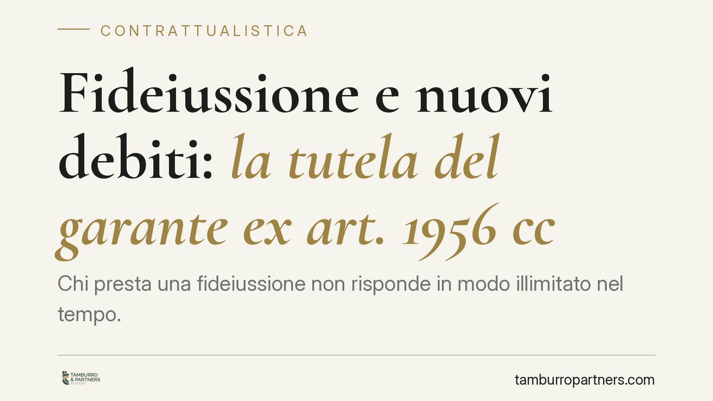

Fideiussione e nuovi debiti: la tutela del garante ex art. 1956 cc
Chi presta una fideiussione non risponde in modo illimitato nel tempo. Se il creditore continua a finanziare un debitore ormai in difficoltà, senza avvisare il garante né ottenere il suo consenso, la garanzia sui nuovi debiti può venire meno. L'art. 1956 del Codice civile fissa questo principio e la Cassazione ne ha rafforzato la portata a tutela del fideiussore.

Il caso: fino a dove risponde il garante?
La fideiussione è la garanzia con cui un soggetto (il garante o fideiussore) si obbliga a pagare il debito altrui se il debitore principale non adempie. È uno strumento diffusissimo nei rapporti bancari e commerciali: il titolare di un'azienda che garantisce i debiti della società, il familiare che avalla un finanziamento.
Il problema nasce quando il rapporto si prolunga nel tempo. Il debitore entra in crisi, la sua situazione patrimoniale peggiora, ma il creditore — spesso una banca — continua a concedere nuovo credito. A quel punto il garante rischia di rispondere anche di debiti sorti quando il debitore era già di fatto insolvente.
Inquadramento normativo
Interviene qui l'art. 1956 del Codice civile, che disciplina la cosiddetta fideiussione per obbligazioni future. La norma stabilisce che il fideiussore è liberato se il creditore, senza speciale autorizzazione, ha fatto credito al terzo pur conoscendo il peggioramento delle sue condizioni economiche, tali da rendere notevolmente più difficile il recupero.
In parole semplici: se la banca sa che il debitore è ormai a rischio e continua ad erogare denaro senza avvisare il garante, quest'ultimo non risponde dei nuovi debiti così maturati.
La Cassazione ha precisato due punti decisivi. Primo: l'onere della prova grava sul creditore, che deve dimostrare di aver agito correttamente, ossia di aver ottenuto l'autorizzazione del garante o di non essere a conoscenza del dissesto. Secondo: le clausole con cui il fideiussore rinuncia in anticipo alla tutela dell'art. 1956 cc sono nulle, perché svuoterebbero una protezione posta a presidio della buona fede contrattuale (art. 1375 cc).
Cosa cambia per il garante
Le implicazioni pratiche sono rilevanti per chiunque abbia sottoscritto una fideiussione, in particolare a favore di un istituto di credito.
La protezione non è automatica: opera solo per i debiti sorti dopo il momento in cui il creditore ha conosciuto — o avrebbe dovuto conoscere — l'aggravamento della situazione del debitore. I debiti anteriori restano coperti dalla garanzia.
Diventa quindi centrale ricostruire la cronologia del rapporto: quando è emersa la crisi del debitore, quali erogazioni sono seguite, se il garante è stato informato o ha autorizzato la prosecuzione del credito.
Attenzione anche alle clausole contenute nei moduli standard predisposti dalle banche. Molte contengono rinunce preventive alla tutela ex art. 1956 cc: alla luce dell'orientamento della Cassazione, tali pattuizioni sono contestabili in giudizio.
Cosa fare in concreto
- Conserva la documentazione: raccogli il testo della fideiussione, gli estratti conto e ogni comunicazione ricevuta dalla banca sull'andamento del rapporto.
- Verifica le clausole di rinuncia: individua nel contratto eventuali previsioni che escludono o limitano la tutela dell'art. 1956 cc e valutane la nullità.
- Ricostruisci la tempistica: stabilisci il momento in cui il creditore ha avuto contezza della crisi del debitore, elemento chiave per distinguere debiti coperti e non coperti.
- Non firmare autorizzazioni generiche: se la banca chiede il consenso alla prosecuzione del credito verso un debitore in difficoltà, valutane con attenzione la portata prima di sottoscrivere.
- Reagisci per tempo: se ricevi una richiesta di pagamento come fideiussore, consigliamo di far esaminare la posizione prima di adempiere, per verificare la sussistenza dei presupposti di liberazione.
Un principio di equilibrio
L'art. 1956 cc esprime un'idea di fondo: la garanzia non può trasformarsi in uno strumento che scarica sul fideiussore le conseguenze di scelte imprudenti del creditore. Chi eroga credito a un soggetto già in dissesto, senza coinvolgere il garante, non può poi pretendere da quest'ultimo il pagamento dei nuovi debiti.
La collocazione temporale dei debiti e la conoscenza della crisi da parte del creditore sono i due assi su cui ruota ogni valutazione. Si tratta di accertamenti tecnici, che richiedono un'analisi puntuale del singolo rapporto.
---
*Contributo informativo a cura di Tamburro & Partners - Avv. Giuseppe Tamburro. Non costituisce parere legale.*
Ogni contratto ha il suo equilibrio.
Se vuoi una revisione delle clausole o una redazione su misura, scrivi allo studio. Ti rispondiamo entro un giorno lavorativo.